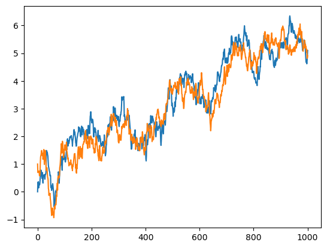

Add harmonic bond force#
import molsysmt as msm
import openmm as mm
from openmm import unit
from openmm import app
from tqdm import tqdm
import numpy as np
from matplotlib import pyplot as plt
topology = app.Topology()
chain = topology.addChain('A')
residue = topology.addResidue('Ar', chain)
atom = topology.addAtom(name='Ar', element= app.element.argon, residue=residue)
chain = topology.addChain('B')
residue = topology.addResidue('Ar', chain)
atom = topology.addAtom(name='Ar', element= app.element.argon, residue=residue)
system = mm.System()
system.addParticle(atom.element.mass)
system.addParticle(atom.element.mass)
1
temperature = 300*unit.kelvin
integration_timestep = 2.0*unit.femtoseconds
saving_interval = 1.00*unit.picoseconds
logging_interval = 100.00*unit.picoseconds
simulation_time = 1000.*unit.picoseconds
saving_steps = int(saving_interval/integration_timestep)
logging_steps = int(logging_interval/integration_timestep)
md_steps = int(simulation_time/integration_timestep)
friction = 5.0/unit.picoseconds
integrator = mm.LangevinIntegrator(temperature, friction, integration_timestep)
platform = mm.Platform.getPlatformByName('OpenCL')
---------------------------------------------------------------------------
OpenMMException Traceback (most recent call last)
/tmp/ipykernel_8141/3902948268.py in ?()
----> 1 platform = mm.Platform.getPlatformByName('OpenCL')
~/micromamba/envs/docs/lib/python3.12/site-packages/openmm/openmm.py in ?(name)
12493 Get the registered Platform with a particular name. If no Platform with that name has been registered, this throws an exception.
12494
12495 This is identical to the version of getPlatform() that takes a name. It is here for backward compatibility.
12496 """
> 12497 return _openmm.Platform_getPlatformByName(name)
OpenMMException: There is no registered Platform called "OpenCL"
simulation = app.Simulation(topology, system, integrator, platform)
initial_positions = [[0.0, 0.0, 0.0], [1.0, 1.0, 1.0]] * unit.nanometers
simulation.context.setPositions(initial_positions)
Lbox = 2.0
v1 = [Lbox,0,0] * unit.nanometers
v2 = [0,Lbox,0] * unit.nanometers
v3 = [0,0,Lbox] * unit.nanometers
simulation.context.setPeriodicBoxVectors(v1, v2, v3)
msm.thirds.openmm.forces.add_harmonic_bond_force(simulation, atom_pair=[0,1],
force_constant='1000 kilojoules/(mol*nanometers**2)',
bond_length='1 nanometer',
pbc=True)
0
reporter_tqdm = msm.thirds.openmm.reporters.TQDMReporter(logging_steps, md_steps, temperature=False)
simulation.reporters.append(reporter_tqdm)
reporter_trajectory_dict = msm.thirds.openmm.reporters.TrajectoryDictReporter(saving_steps, time=True, coordinates=True)
simulation.reporters.append(reporter_trajectory_dict)
simulation.step(md_steps)
Potential energy: 25.19 kJ/mol ± 76.78 kJ/mol
Execution time: 0 days, 0 hours, 0 minutes, and 13.13 seconds (6578.37 ns/day).
trajectory_dict = reporter_trajectory_dict.finalize()
plt.plot(trajectory_dict['time'], trajectory_dict['coordinates'][:,0,0])
plt.plot(trajectory_dict['time'], trajectory_dict['coordinates'][:,1,0])
plt.show()

distance = msm.structure.get_distances(trajectory_dict, selection=0, selection_2=1, pbc=True)
[0] [1] False False
plt.plot(trajectory_dict['time'], distance[:,0,0])
/conda/miniconda3/envs/MolSysMT@uibcdf_3.12/lib/python3.12/site-packages/matplotlib/cbook.py:1345: UnitStrippedWarning: The unit of the quantity is stripped when downcasting to ndarray.
return np.asarray(x, float)
[<matplotlib.lines.Line2D at 0x78c85115b8c0>]
distance = msm.structure.get_distances(trajectory_dict, selection=[0,1], pairs=True, pbc=False)
[0] [1] True False
distance.shape
plt.plot(trajectory_dict['time'], distance[:,0])
[<matplotlib.lines.Line2D at 0x78c84fd43bf0>]